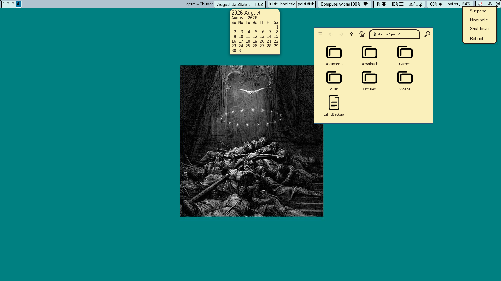
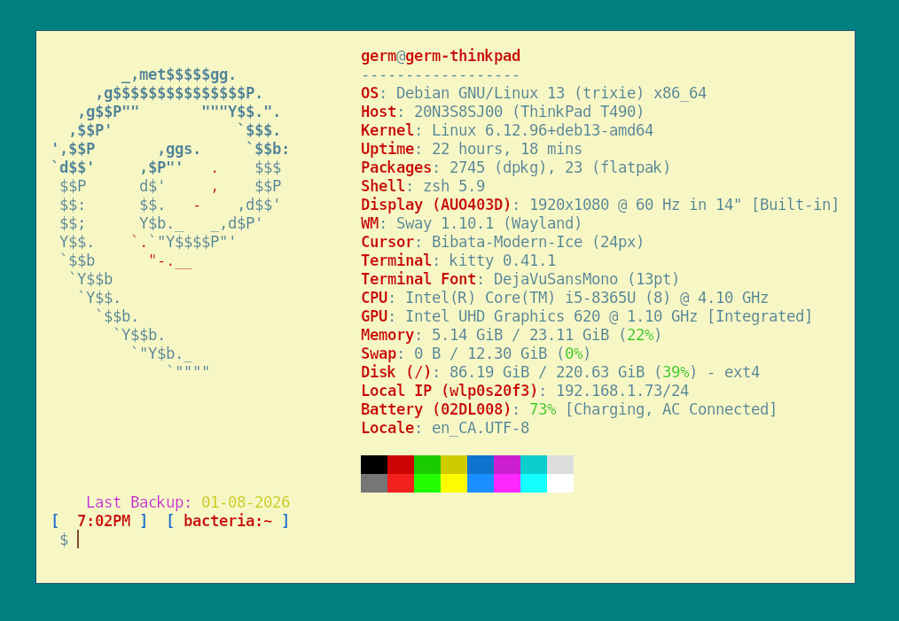

Debian | Sway
trying something new
August 013, 2026

I decided to switch from Fedora linux to Debian. And also went with sway window manager instead of hyprland. Mostly because I was getting tired of being on a more "cutting edge" distro and having a lot of updates. And hyprland is so new, "bleeding edge" that every update was breaking something in my config files. It sure was aesthtic but idk. Sway has a certain charm to it.
I am actually still using waybar at the top too but decided to go with a super simple almost windows 95 era type look. Same as the strangely sized wallpaper and super simple file explorer.

My terminal is the same, kitty with zsh, I just made this config to match my desktop. The simplicity is appealling to me.
So far I really like debian. I guess it's true what they say. "all roads lead to debian".
Also cool is the popularity. So much software has .deb files making installation super easy. I used to run my jellyfin client through a flatpak install but this time I used the .deb. And omg. So so so much faster. It boots up and laods in less than a second it's amazing the difference.